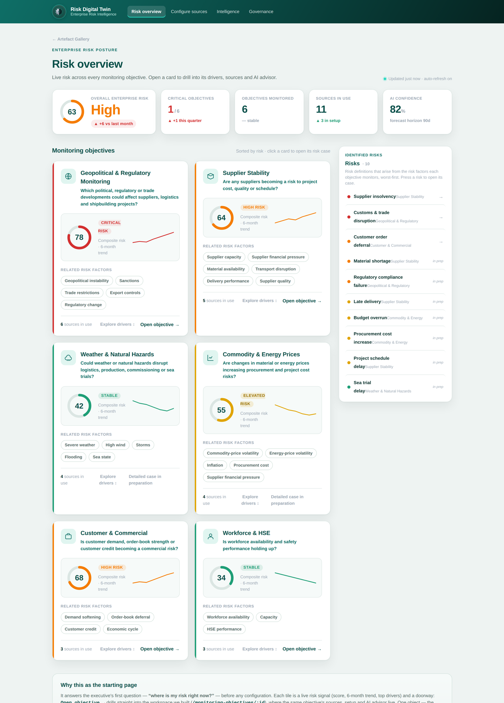

Fragmented
Risk lives in spreadsheets, siloed systems and people’s heads. There is no single, current picture of where the enterprise stands.
Digital Twin Risk Room
Turn enterprise risk into a live, explainable, decision-ready picture. One workspace that answers what is happening, why, what happens next, and what to do.
Built for complex newbuild programmes. People approve sources and decide the action.

Why it matters
Complex programmes share suppliers, lanes and cash, so one missed risk cascades across the portfolio. Sources: Bent Flyvbjerg, “What You Should Know About Megaprojects and Why,” Project Management Journal 45(2), 2014; U.S. GAO, Navy shipbuilding assessments, 2024–25.
The problem
Risk lives in spreadsheets, siloed systems and people’s heads. There is no single, current picture of where the enterprise stands.
By the time a risk shows up in a report, it has usually already hit the schedule or the budget.
Numbers arrive with no visible basis, so leaders question them, and decisions stall.
Our solution
The Risk Room brings live operations, enterprise risk, external signals and AI together, so leadership can answer the four questions that matter in one place.
A live twin of operations and enterprise risk: current scores, signals and status.
Every risk traced to its factors, its evidence and the sources behind it.
Prediction, uncertainty and scenarios across time, with a confidence you can question.
Prioritised mitigations with their expected effect on cost, schedule and confidence.
Live operations · Enterprise risk · External signals · AI
The product
How it is built
The tool starts from a business question, not a list of risks. Each layer links to the next, so every risk traces back to what you chose to watch and the evidence behind it.
What you choose to watch.
“Are suppliers becoming a risk to project cost, quality or schedule?”
The conditions it monitors.
Capacity, financial pressure, material availability, transport, delivery performance.
What can actually go wrong.
Insolvency, material shortage, late delivery, project schedule delay.
How the board sees it.
Supply chain, financial, procurement.
Live internal, external and historical sources, so each factor and risk traces back to a real record. Relationships are many-to-many: one factor can drive several risks, and one source can serve several objectives.
How the AI works
Raw signals arrive continuously. The system filters, enriches and clusters them: strengthening cases it already holds, and proposing a new one only when it clears five tests.
On a quiet day the twin does not invent a risk. It raises confidence on the cases it already holds.
Why it is different
Next steps
Start on your real programmes, prove value against agreed measures, then scale — with a governed path at every step.
Scoping workshop. Map monitoring objectives and top enterprise risks. Agree evidence, governance, outputs, scope and success measures.
Stand up connectors on one or two objectives, such as geopolitical and weather. AI assists setup. Raw records stay for audit. Live signals build cases with evidence.
Run the live Risk Room. Weekly review on your programmes. Explainable scores, suggested actions, and a first supplier or internal feed.
Pilot report against the agreed measures, then a proposal for an enterprise-wide twin: more objectives, ERP-grade connectors, roles and governance.
Fixed timeline, about 12 weeks. Weeks 1–2 scope · weeks 3–6 connect · weeks 7–12 operate and review.
Pilot
Tell us which risks you need watched. We will reply from Pinion Oy about a scoping conversation.
Or write directly: hello@riskdigitaltwin.com